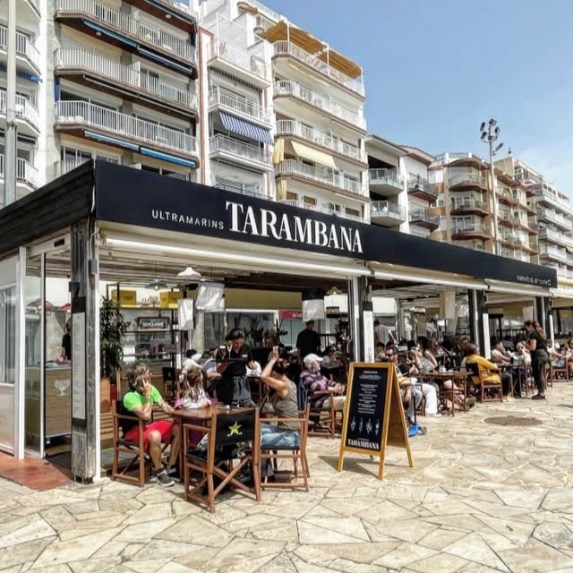
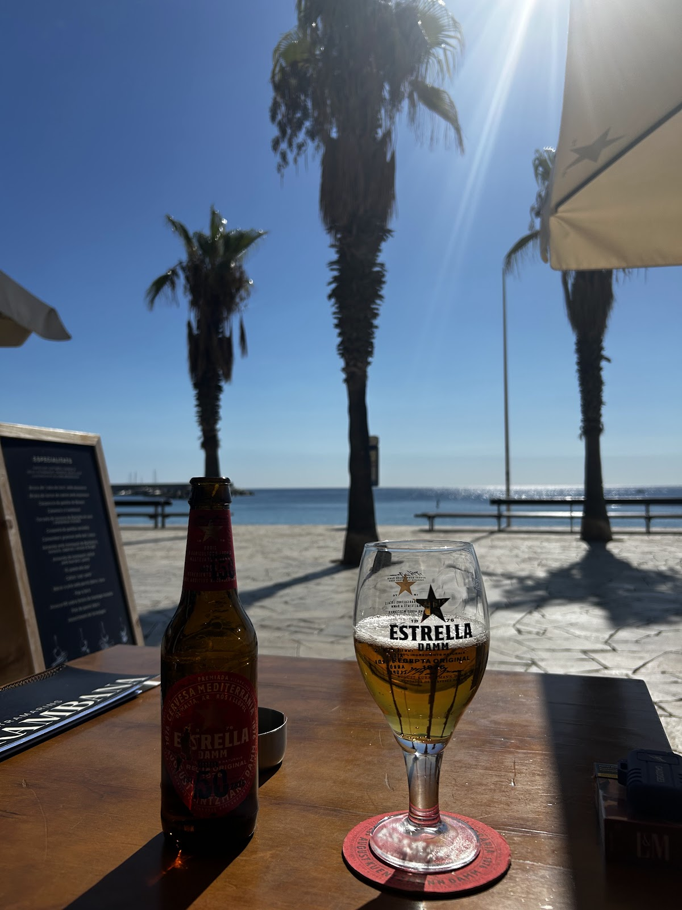
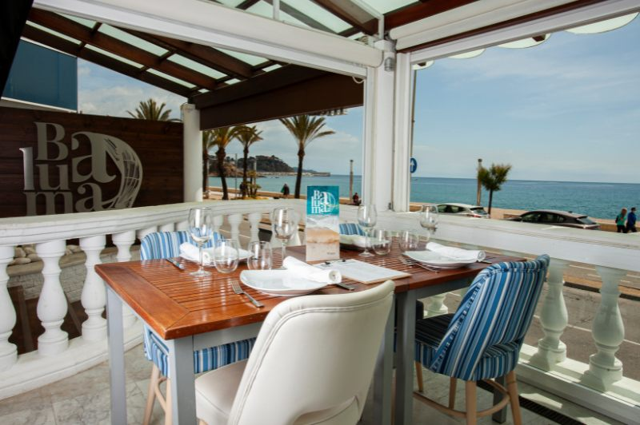

Ultramarins · des de la platja
Tarambana
Platillos per compartir a primera línia de mar. Producte fresquíssim, conserves de les bones i una terrassa on el temps passa volant.
Omple la cistella
4,6★ · 261 opinions a Google


4 platillos18,90€+ postre + beguda
El colmado
Tria 3 llaunes per compartir
Toca les llaunes de la prestatgeria i posa-les a la cistella. Després tria el teu segon. Quatre platillos, postre i beguda: 18,90 € per persona.
I un segon per persona
Llaunes obertes
El que surt de cuina
TerrassaDavant del mar, de matí a nit
BarraCanyes, vermut i platillos
CuinaProducte fresc cada dia
DolçPostres de la casa
VinsPer acompanyar-ho tot
Ho diuen a Google
«Una experiencia fantástica! El producto es fresquísimo, los platillos están buenísimos y el ambiente frente al mar es inmejorable.»Hernando Ruiz · ★★★★★
«Restaurante a primera línea de mar… El servicio amable, atento, eficaz y muy rápido, no tienes que esperar ni 10 minutos a que te sirvan la comida.»Eat with Berta! · ★★★★★
«Me encanta cenar en este restaurante enfrente del mar. La alcachofa con jamón, deliciosa. Todos los platos bien cocinados.»Ana Ant · ★★★★★
On som
Passeig de Mar
de Blanes
Passeig Cortils i Vieta, 27 · 17300 Blanes
- Dilluns – dijous
- 8:30 – 23:00
- Divendres – diumenge
- 8:30 – 00:00
Sopars d'empresa i grups · Xec regal · Pregunta'ns
